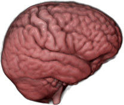

This Beginner’s guide will teach you all you need to know for your first steps with Nipype. You will see that Nipype is a really practical and easy to learn neuroimaging toolbox, written in Python, that helps to connect many of the different softwares used in neuroimaging, such as SPM, FSL, FreeSurfer and AFNI. The goal of this Beginner’s guide is to teach you the basics about Neuroimaging and to show you each step along the way of a complete neuroimaging analysis. By learning Nipype, you will become an expert in neuroimaging and be able to analyze your own dataset in no time.
Important
Make sure to check out the new Nipype Tutorial, a very nice and more compact alternative to this comprehensive guide. Also, if you want to experience Nipype on a real dataset without the need to setting up your system, check out the Nipype Course. The Nipype Course runs in a Docker container, which gives you the opportunity to run Nipype on any Windows, Mac or Linux machine.
This part introduces you to Nipype, explains what it is and how it works. It will also introduce you to neuroimaging in general and tell you all you need to know for the analysis of a basic neuroimaging dataset. At the end, you should be able to understand what Nipype is, how it is working and why it is so useful in neuroimaging.
|  |
This part is all about downloading and installing Nipype and its dependencies. It will also show you how to set up all necessary environment variables and prepare everything, so that at the end you will be ready to run Nipype on your system.
 |
This part will show you how to use Nipype by analyzing an fMRI dataset. By going through a neuroimaging analysis step by step, you will learn all about Nipype, its building blocks and how to connect them to create your own analysis workflow. At the end you will be able to run your own neuroimaging analysis and make your first experiences with Nipype on real data.
 |
This part contains many different implementations of Nipype. Amongst others, you will learn how to do a first and second level analysis, how to normalize your data, how to use Nipype in a more flexible way (e.g. import and reuse of other workflows), how to do a region of interest (ROI) analysis, how to do a surfaced based morphometry (SBM) analysis, how to use ANTs to create your own dataset template, how to quality control your data, how to use additional supporting toolboxes such as bips and mindboggle and more...
First things first: Don’t panic! This part will show you how to tackle almost all problems you can encounter by using Nipype, iPython or this beginner’s guide. And for everything else, there’s always chocolate!
 |
 |
Everything important to download can be found in this section.
|
{kind=link}
{kind=link}